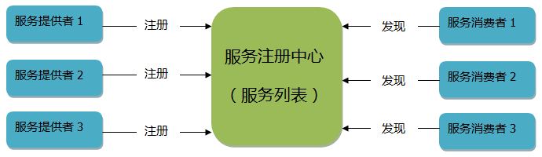
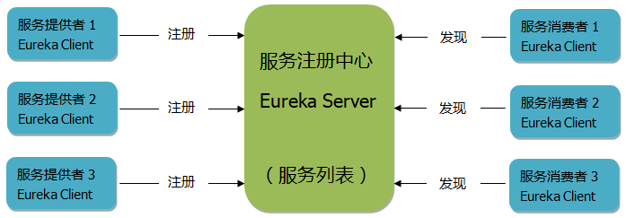
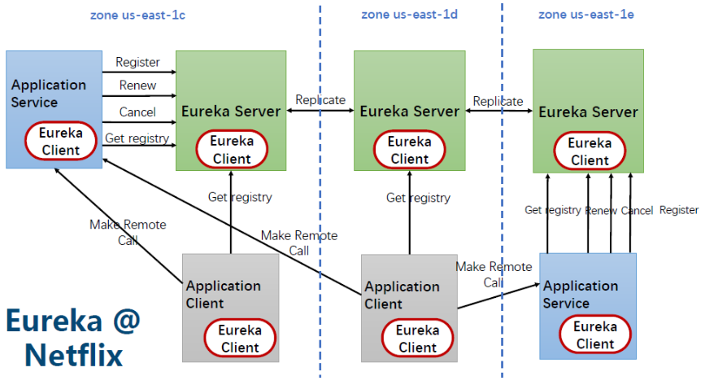
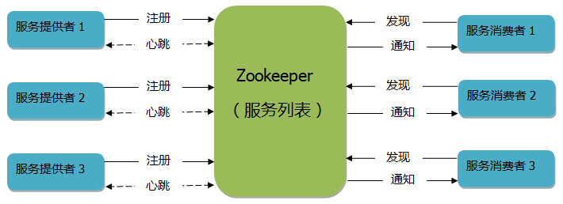
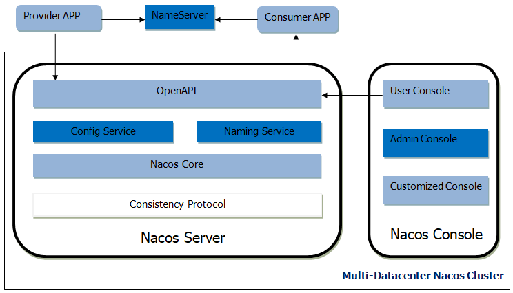
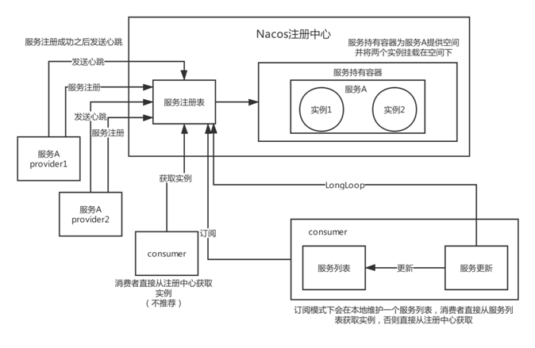
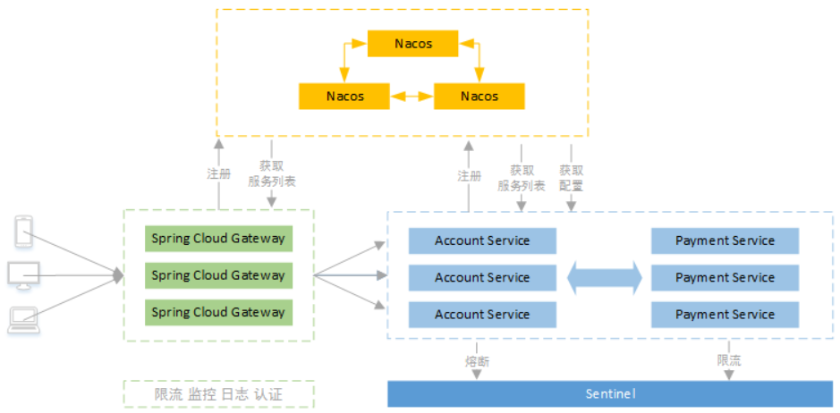

- AQS 万字图文全面解析.md.html
- Docker 镜像构建原理及源码分析.md.html
- ElasticSearch 小白从入门到精通.md.html
- JVM CPU Profiler技术原理及源码深度解析.md.html
- JVM 垃圾收集器.md.html
- JVM 面试的 30 个知识点.md.html
- Java IO 体系、线程模型大总结.md.html
- Java NIO浅析.md.html
- Java 面试题集锦（网络篇）.md.html
- Java-直接内存 DirectMemory 详解.md.html
- Java中9种常见的CMS GC问题分析与解决（上）.md.html
- Java中9种常见的CMS GC问题分析与解决（下）.md.html
- Java中的SPI.md.html
- Java中的ThreadLocal.md.html
- Java线程池实现原理及其在美团业务中的实践.md.html
- Java魔法类：Unsafe应用解析.md.html
- Kafka 源码阅读笔记.md.html
- Kafka、ActiveMQ、RabbitMQ、RocketMQ 区别以及高可用原理.md.html
- MySQL · 引擎特性 · InnoDB Buffer Pool.md.html
- MySQL · 引擎特性 · InnoDB IO子系统.md.html
- MySQL · 引擎特性 · InnoDB 事务系统.md.html
- MySQL · 引擎特性 · InnoDB 同步机制.md.html
- MySQL · 引擎特性 · InnoDB 数据页解析.md.html
- MySQL · 引擎特性 · InnoDB崩溃恢复.md.html
- MySQL · 引擎特性 · 临时表那些事儿.md.html
- MySQL 主从复制 半同步复制.md.html
- MySQL 主从复制 基于GTID复制.md.html
- MySQL 主从复制.md.html
- MySQL 事务日志(redo log和undo log).md.html
- MySQL 亿级别数据迁移实战代码分享.md.html
- MySQL 从一条数据说起-InnoDB行存储数据结构.md.html
- MySQL 地基基础：事务和锁的面纱.md.html
- MySQL 地基基础：数据字典.md.html
- MySQL 地基基础：数据库字符集.md.html
- MySQL 性能优化：碎片整理.md.html
- MySQL 故障诊断：一个 ALTER TALBE 执行了很久，你慌不慌？.md.html
- MySQL 故障诊断：如何在日志中轻松定位大事务.md.html
- MySQL 故障诊断：教你快速定位加锁的 SQL.md.html
- MySQL 日志详解.md.html
- MySQL 的半同步是什么？.md.html
- MySQL中的事务和MVCC.md.html
- MySQL事务_事务隔离级别详解.md.html
- MySQL优化：优化 select count().md.html
- MySQL共享锁、排他锁、悲观锁、乐观锁.md.html
- MySQL的MVCC（多版本并发控制）.md.html
- QingStor 对象存储架构设计及最佳实践.md.html
- RocketMQ 面试题集锦.md.html
- SnowFlake 雪花算法生成分布式 ID.md.html
- Spring Boot 2.x 结合 k8s 实现分布式微服务架构.md.html
- Spring Boot 教程：如何开发一个 starter.md.html
- Spring MVC 原理.md.html
- Spring MyBatis和Spring整合的奥秘.md.html
- Spring 帮助你更好的理解Spring循环依赖.md.html
- Spring 循环依赖及解决方式.md.html
- Spring中眼花缭乱的BeanDefinition.md.html
- Vert.x 基础入门.md.html
- eBay 的 Elasticsearch 性能调优实践.md.html
- 不可不说的Java“锁”事.md.html
- 互联网并发限流实战.md.html
- 从ReentrantLock的实现看AQS的原理及应用.md.html
- 从SpringCloud开始，聊微服务架构.md.html
- 全面了解 JDK 线程池实现原理.md.html
- 分布式一致性理论与算法.md.html
- 分布式一致性算法 Raft.md.html
- 分布式唯一 ID 解析.md.html
- 分布式链路追踪：集群管理设计.md.html
- 动态代理种类及原理，你知道多少？.md.html
- 响应式架构与 RxJava 在有赞零售的实践.md.html
- 大数据算法——布隆过滤器.md.html
- 如何优雅地记录操作日志？.md.html
- 如何设计一个亿级消息量的 IM 系统.md.html
- 异步网络模型.md.html
- 当我们在讨论CQRS时，我们在讨论些神马？.md.html
- 彻底理解 MySQL 的索引机制.md.html
- 最全的 116 道 Redis 面试题解答.md.html
- 有赞权限系统(SAM).md.html
- 有赞零售中台建设方法的探索与实践.md.html
- 服务注册与发现原理剖析（Eureka、Zookeeper、Nacos）.md.html
- 深入浅出Cache.md.html
- 深入理解 MySQL 底层实现.md.html
- 漫画讲解 git rebase VS git merge.md.html
- 生成浏览器唯一稳定 ID 的探索.md.html
- 缓存 如何保证缓存与数据库的双写一致性？.md.html
- 网易严选怎么做全链路监控的？.md.html
- 美团万亿级 KV 存储架构与实践.md.html
- 美团点评Kubernetes集群管理实践.md.html
- 美团百亿规模API网关服务Shepherd的设计与实现.md.html
- 解读《阿里巴巴 Java 开发手册》背后的思考.md.html
- 认识 MySQL 和 Redis 的数据一致性问题.md.html
- 进阶：Dockerfile 高阶使用指南及镜像优化.md.html
- 铁总在用的高性能分布式缓存计算框架 Geode.md.html
- 阿里云PolarDB及其共享存储PolarFS技术实现分析（上）.md.html
- 阿里云PolarDB及其共享存储PolarFS技术实现分析（下）.md.html
- 面试最常被问的 Java 后端题.md.html
- 领域驱动设计在互联网业务开发中的实践.md.html
- 领域驱动设计的菱形对称架构.md.html
- 高效构建 Docker 镜像的最佳实践.md.html
服务注册与发现原理剖析（Eureka、Zookeeper、Nacos）
注册中心介绍
服务注册中心，是一个给服务提供者注册服务（产生服务列表）、给服务消费者获取服务信息（获取服务列表）的一个地方。服务列表记录着 IP、端口、服务名等信息，服务消费者通过这些信息进行远程调用。这里我画了一张图来描述服务注册中心、服务提供者和服务消费者的关系。

在微服务架构当中，服务注册中心是必不可少的组件之一。比如 Dubbo 使用 ZooKeeper 作为服务注册中心、目前大多数公司都会使用 Eureka 作为 Spring Cloud 微服务的注册中心等等。
在 Spring Cloud 中，除了可以使用 Eureka 作为注册中心外，还可以使用 ZooKeeper 作为注册中心，还可以使用 Nacos 作为注册中心。
根据 CAP 定律，分布式系统不能同时支持 C（一致性）、A（可用性）、P（分区容错性），只能同时支持两种，比如 ZooKeeper 支持 CP（更注重一致性），Eureka 支持 AP（更注重可用性），Nacos 在 1.x 版本既支持 AP、也支持 CP。
Eureka（出自于 Spring 家族）
介绍
Spring Cloud Eureka 是在 Netflix 的 Eureka 的基础上进行二次开发而诞，采用了 C-S 的设计架构，Spring Cloud Eureka 提供 Eureka Server 服务端与 Eureka Client 客户端 ，服务端即是 Eureka 服务注册中心，客户端完成微服务向 Eureka 服务的注册与发现。服务端和客户端均采用 Java 语言编写。
网上很多人说 Eureka 闭源，其实没有，只是 Eurkea 2.x 分支不再维护，官方依然在积极地维护 Eureka 1.x，Spring Cloud 还是使用的 1.x 版本的 Eureka，所以不必过分担心，就算 Eureka 真的闭源了，Spring Cloud 还可以使用 ZooKeeper、Consul、Nacos 等等来实现服务治理。比如使用 ZooKeeper 替代 Eureka，也是改几行配置和换个 jar 的事情。
Eureka Server 与 Eureka Client 的关系：

服务端（Eureka Server）
Eureka Server 其实就是服务注册中心，负责管理每个 Eureka Client 的服务信息（IP、端口等等）和状态。服务端主要提供以下功能。
提供服务注册
提供一个统一存储服务的地方，即服务列表，Eureka Client 应用启动时把自己的服务都注册到这里。
提供注册表
为 Eureka Client 提供服务列表，Eureka Client 首次获取服务列表后会缓存一份到自己的本地，定时更新本地缓存，下次调用时直接使用本地缓存的服务信息进行远程调用，可以提高效率。
服务剔除（Eviction）
如果 Eureka Client 超过 90 秒（默认）不向 Eureka Sever 上报心跳，Eureka Server 会剔除该 Eureka Client 实例，但是前提是不满足自我保护机制才剔除，避免杀错好人。
自我保护机制
如果出现网络不稳定的时候，Eureka Client 的都能正常提供服务，即使超过了 90 秒没有上报心跳，也不会马上剔除该 Eureka Client 实例，而是进入自我保护状态，不会做任何的删除服务操作，仍然可以提供注册服务，当网络稳定之时，则解除自我保护恢复正常。
客户端（Eureka Client）
Eureka Client 可以是服务提供者客户端角色，也可以是服务消费者客户端角色，客户端主要提供以下功能。
服务注册（Register）
作为服务提供者角色，把自己的服务（IP、端口等等）注册到服务注册中心。
自动刷新缓存（GetRegisty）
作为服务消费者角色，从服务注册中心获取服务列表，并缓存在本地供下次使用，每 30 秒刷新一次缓存。
服务续约（Renew）
Eureka Client 每 30 秒（默认可配置）向 Server 端上报心跳（http 请求）告诉自己很健康，如果 Server 端在 90 秒（默认可配置）内没有收到心跳，而且不是自我保护情况，则剔除之。
远程调用（Remote Call）
作为服务消费者角色，从服务注册中心获取服务列表后，就可以根据服务相关信息进行远程调用了，如果存在多个服务提供者实例时，默认使用负载均衡 Ribbon 的轮询策略调用服务。
服务下线（Cancel）
作为服务提供者角色，在应用关闭时会发请求到服务端，服务端接受请求并把该实例剔除。
注册与发现的工作流程
- 假设 Eureka Server 已经启动，Eureka Client（服务提供者）启动时把服务注册到 Eureka Server；
- Eureka Client（服务提供者）每 30 秒（默认可配置）向 Eureka Sever 发 http 请求（即心跳），即服务续约；
- Eureka Server90 秒没有收到向 Eureka Client（服务提供者）的心跳请求，则统计 15 分钟内是否存在 85% 的 Eureka Client（服务提供者）没有发心跳，如果是则进行自我保护状态（比如网络不稳定），如果不是则剔除该 Eureka Client（服务提供者）实例；
- Eureka Client（服务消费者）定时调用 Eureka Server 接口获取服务列表更新本地缓存；
- Eureka Client（服务消费者）远程调用服务时，先从本地缓存找，如果找到则直接发起服务调用，如果没有则到 Eureka Server 获取服务列表缓存到本地后再发起服务调用；
- Eureka Client（服务提供者）应用关闭时会发 HTTP 请求到 Eureka Server，服务端接受请求后把该实例剔除。
集群
单个 Eureka Server 节点情况下，假如宕机了，Eureka Client（服务消费者）还是可以继续工作，因为每个 Eureka Client 都会缓存一份服务列表到本地，但是一旦新服务上线，Eureka Client（服务消费者）就无法调用新服务了，因此还是需要搭建 Eureka Server 集群来实现高可用。下图是由 3 个节点组成的高可用集群：

Eureka Server 集群当中的每个节点都是通过 Replicate（即复制）来同步数据，没有主节点和从节点之分，所有节点都是平等而且数据都保持一致。因为结点之间是通过异步方式进行同步数据，不保证强一致性，保证可用性，所以是 AP。
假如其中一个 Eureka Server 节点宕机了，不影响 Eureka Client 正常工作，Eureka Client 的请求由其他正常的 Eureka Server 节点接收，当出现宕机的那个 Eureka Server 节点正常启动后，复制其他节点的最新数据（服务列表）后，又可以正常提供服务了。
ZooKeeper（出自于 Apache）
介绍
ZooKeeper 既可以当作服务注册中心，也可以当作服务协调者（比如 hadoop 集群）。此处仅介绍服务注册中心，类似 Eureka，也是服务提供者向 ZK 注册服务，服务消费者获取 ZK 的服务列表进行远程调用，比如 Dubbo。服务注册中心、服务提供者和服务消费者的关系如下：

原理
ZK 的文件结构类似于 Linux 系统的树状结构，注册服务时，即在 ZK 中创建一个唯一的 znode 节点来保存服务的 IP、端口、服务名等信息；发现服务时，遍历树状结构文件找到具体的 znode 节点或者服务相关信息进行远程调用。
注册与发现的工作流程
- 假设 ZK 已经启动，服务提供者启动时把服务注册到 ZK 注册中心；
- ZK 注册中心和服务提供者之间建立一个 Socket 长连接，ZK 注册中心定时向每个服务提供者发数据包，如果服务提供者没响应，则剔除该服务提供者实例，把更新后的服务列表发送给所有服务消费者（即通知）；
- 服务消费者启动时到 ZK 注册中心获取一份服务列表缓存到本地供以后使用；
- 服务消费者远程调用服务时，先从本地缓存找，如果找到则直接发起服务调用，如果没有则到 ZK 注册中心获取服务列表缓存到本地后再发起服务调用；
- 当其中一个服务提供者宕机或正常关闭时，ZK 注册中心会把该节点剔除，并通知所有服务消费者更新本地缓存；
- 当这个服务提供者正常启动后，ZK 注册中心也能感知到，并通知所有服务消费者更新本地缓存。
ZooKeeper 和 Eureka 的区别
- 根据 CAP 定律，ZooKeeper 支持 CP，Eureka 支持 AP。因为 ZK 集群中如果有节点宕机则需要选举 leader，选举过程需要 30 至 120 秒，选举过程时集群不可用，牺牲时间来保证数据一致性，因此支持 CP；而 Eureka 每个节点的数据都一致，没有主从节点之分，不需选举，如果其中一个节点宕机则马上切换到另外一个健康的节点上，保证可用性，因此支持 AP。
- 微服务架构当中，可用性比一致性更重要些，Eureka 比 ZooKeeper 更合适，而 ZooKeeper 更适合做分布式协调服务，比如：hadoop 集群。
Nacos（出自于阿里）
介绍
在 2018 年 7 月份阿里发布了 Nacos，是一个后起之秀，它吸取了 Eureka、ZooKeeper 等注册中心的优点，还支持 k8s、Dubbo、兼容 Spring Cloud 等无缝对接各大生态。既能作为服务注册中心、也能作为配置中心，在 CAP 定律中既支持 AP 也支持 CP。Nacos 服务端需要独立部署，也有自己的后台管理界面。好像无所不能一样，出自阿里必为精品。
架构图

主要功能点
服务注册与发现
类似 Eureka、ZooKeeper、Consul 等组件，既可以支持 HTTP、https 的服务注册和发现，也可以支持 RPC 的服务注册和发现，比如 Dubbo，也是出自于阿里，完全可以替代 Eureka、ZooKeeper、Consul。
动态配置服务
类似 Spring Cloud Config + Bus、Apollo 等组件。提供了后台管理界面来统一管理所有的服务和应用的配置，后台修改公共配置后不需重启应用程序即可生效。
注册与发现的工作流程

- 假设 Nacos Server 已经启动，服务提供者启动时把服务注册到 Nacos 注册中心；
- 服务提供者注册成功后，定时发 http 请求（即心跳）到注册中心，证明自身服务实例可用；
- 如果注册中心长时间没有收到服务提供者的心跳请求，则剔除该实例；
- 服务消费者发现服务支持两种方式，一种是主动请求注册中心获取服务列表（不推荐），一种是订阅注册中心的服务并提交一个 Listener，如果注册中心的服务有变更，由 Listener 来通知服务消费者更新本地服务列表；
- 服务消费者获取服务相关信息进行远程调用。
负载均衡
Nacos 的客户端负载均衡是使用 Feign 实现，Feign 是使用接口 + 注解的方式来调用 HTTP 接口，底层是使用接口的动态代理（即 jdk 的动态代理）机制实现。默认使用轮询策略，还可以加权轮询、IP 哈希、最少连接数、最少连接数慢启动时间等策略可以选择。
集群
Nacos 的单节点，即 standalone 模式，配置的数据默认存储到内嵌的数据库 Derby 中，搭建集群时是不能使用内嵌的数据库，不然数据无法共享，可以使用 Mysql 进行数据存储。最好采用 3 个或 3 个以上 Nacos 节点来搭建集群，如图：

Eureka、ZooKeeper、Nacos 区别
Eureka 不能支撑大量服务实例，因为 Eureka 的每个节点数据都一致，会产生大量的心跳检查等等导致并发性能低下，ZooKeeper 的频繁上下线通知会导致性能下降，而 Nacos 可以支持大量服务实例又不丢性能，据说服务数量能达到 10 万以上。
Eureka、ZooKeeper、Nacos、Consul 对比
- Eureka 适用于服务实例数量不大的服务注册中心；
- ZooKeeper 相对服务注册中心来说更适用于分布式协调服务；
- Nacos 既适用于大量服务实例的服务注册中心，也可以作为配置中心；
- Consul 更适用于 Service Mesh 架构，使用 Go 语言开发，不方便排查 Bug。